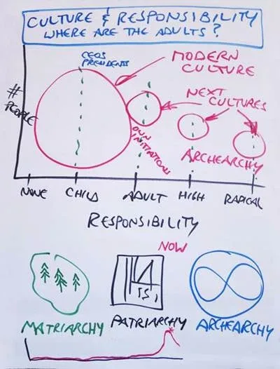
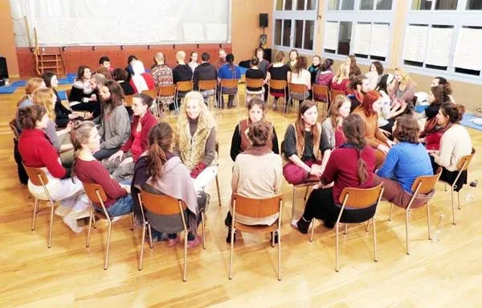
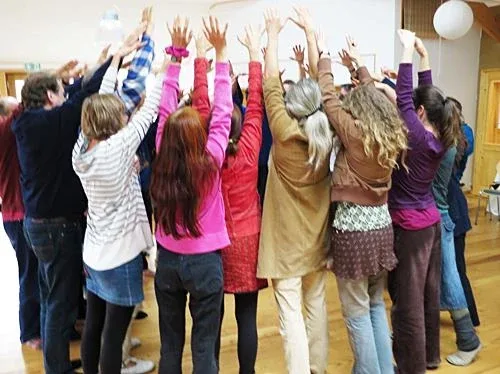
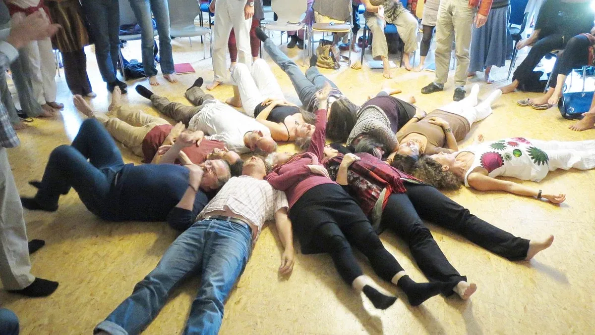
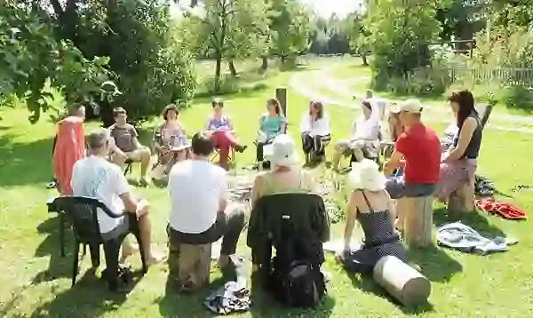

Torus
Technology
"A way for many
to also be one!"
Torus
Technology
"A way for many
to also be one!"
QUESTIONS / ANSWERS

A TORUS IS A GAMEWORLD
Our lives are made up of the GAMEWORLDS that we play in.
If you are not consciously building and playing in your own GAMEWORLDS then you are a pawn or a slave in other people's GAMEWORLDS.
In a GAMEWORLD such as a company, a public school, or a government, you serve the 'we' by forcing yourself to conform to a job description.
In a GAMEWORLD such as a community you serve the 'we' by being the same as everyone else.
In a TORUS GAMEWORLD you serve the 'we' by being 'you.' In other words, it is necessary that you be 'you.' This may bring you unexpected elation.

WHAT IS RESPONSIBILITY?
In the modern capitalist patriarchal empire the term 'responsibility' is defined as: a heavy burden, making you guilty, being blamed, having to pay, and being punished. Since the way to make 'profit' in modern culture is to externalize your costs (to society at large, to third world countries, to the environment, or to future generations). In modern culture, taking responsibility is seen as being stupid, to be avoided.
In next culture, archiarchy (the culture of archetypally initiated women creatively collaborating with archetypally initiated men) the term 'responsibility' is defined as: being the source, being at cause, taking a stand, showing up, navigating the space, choosing the way, inventing new options, being fully involved, engaging presence, serving transformation.
Which do you choose?

CONTEXT OF YOUR TORUS
Responsibility can spread out in a spectrum from no responsibility, to child level responsibility, to adult level responsibility, to high level and radical level responsibility.
If a child makes a mess, who cleans it up? The adults.
Modern culture is making unconscionable messes with no intention at all of ever cleaning them up.
This means that the GAMEWORLD of modern culture is centered on child level responsibility.
By setting the CONTEXT of your TORUS GAMEWORLD at adult or radical responsibility you change the morphogenetic field of the human race. As matriarchal and patriarchal cultures fade into history, your archearchal TORUS will serve many people as a bridge into next culture.

DIVERGENCE
In this photo you can see over 100 small NODES in DIVERGENCE simultaneously creating results. You might call this parallel play, a maximum harvest of group intelligence.
DIVERGENCE is like a solutions engine cut-loose, flying at full throttle. Nothing interferes with the creativity. Results are specific and personal, custom-designed to meet individual needs, while also serving the TORUS as a whole.

CONVERGENCE
During CONVERGENCE each NODE has an opportunity if needed to report in about their activities and any decisions they have made.
Resistance to decisions can be checked and the decisions can be ratified or returned to the NODE for further work.
New NODES can start. People can join an existing NODE or can leave a NODE.
NODES can melt together or separate, or you can officially dissolve a NODE that has completed its mission.
Logistics can be handled. Personal support or processes can be asked for, then time is set for the next CONVERGENCE, and DIVERGENCE begins again!
ORGANIC MOVEMENT
This short video shows actual jellyfish propelling themselves forward using DIVERGENT and CONVERGENT body movements. The way a jellyfish swims is the way a TORUS breathes.

NODE CHOICE CREATING
NODE choices are valid for the entire TORUS after they are ratified at a CONVERGENCE.
Here is a photo of a NODE in the actual moment of making a choice at the end of a long process.
The individuals of the NODE who are making the choices care about the outcome.
Making a NODE choice is a satisfying and empowering moment.

NODE STRATEGIES
Each person weaves their resources into the NODES of their choice. NODES can have any purpose.
This is a photo of a large NODE collecting diverse project resources and inventing more efficient organizational strategies.
From time to time it may be necessary that all the participants at a CONVERGENCE of the TORUS need to work together as one NODE.

DISSOLVING A NODE
This amazing photo is the actual moment when a longstanding NODE completed its mission and dissolved itself.
The members of the NODE spontaneously laid themselves down on the floor together and let the NODE die.
When each person stood up they were free individuals again, finished with the responsibilities and requirements of having been in the NODE. This is celebration time!
TORUS CIRCULAR MEETING PROCESSES
Here are powerful healing and transformation processes that are regularly used during Torus Meeting Technology to bring a multitude of human capabilities into creative collaboration.
Feelings Cycle
First Position (the beginning of the Adult Egostate)
Frying Pan
Growness
Holistic Decision Making
Men's Circle
M.E.S.S. Process
Phoenix Process
Poop On The Table
Purple Card
Requiem Process
Resistance Decision Making
Tar Baby Process
The Hierarchy
The Problem Is The Solution
WEConFest
Whizz Bang
Wisdom Counsel
Wok
Women's Circle
and PM Processes4 BRAINS
INDICATORS:
- When some of your people categorically oppose having conversations with each other.
- When 'camps' of diverse approaches form up.
- When the meeting space seems incomplete in its perspectives and genius resources.
- When those who want to 'do' something are stopped by those who want to 'plan things out' first, whereas others miss human connection, and still others complain of missing the big picture overview.
ARCHAN ECONOMICS
Everyone in your toroidal meeting space was most probably born and raised in win-lose Gremlin-feeding competitive economics, a system which is working as fast as it can to 'monetize nature' regardless of the number of species that go extinct. Oddly enough, or perhaps, self-evidently, even human beings are now at risk.
An entirely new Context for economics is being applied in Archiarchy.
Relocating your Point Of Origin into the Context of Archiarchal Economics will confront every single assumption you packed into your Memetic Construct regarding money, investing, profit, finances, and economics. An entirely new gameworld spreads out before you on the same playing field: Earth. A new future is possible in the challenging new game.
Torus Technology meetings use Archiarchal Economics. It is perhaps time for you and your Teams to upgrade your Standard Human Intelligence Thoughtware (S.H.I.T.).
BAGGAGE
INDICATORS:
- When people secretly defend their hidden nonmaterial possessions, such as fame, security, status, Fantasy Worlds, Hidden Competing Commitments, Addictions, etc.
- When protecting the life a person maintains outside of the meeting Space is more important to them than what is Possible in a Collaborative Invention meeting Space.
- When a person seems to have not enough Attention or Presence in a meeting Space, or is preoccupied with scattered necessities and focus.
CONFUSION SHIFTER
INDICATORS:
- When the entire meeting focus is disrupted to try to explain things to one or more individuals, but they cannot hold the Clarity.
- When vague or overwhelming Confusion sets in for a person or for the entire Team.
- When a 'sleep wave' engulfs people's Attention and they seem to involuntarily enter a Zombie state.
- When crucial elements or factors are inexplicably left out of Gameplans or Strategies.

CRACK IN CERTAINTY
INDICATORS:
- When 'certainty' becomes a burden upon the possibility of possibility.
- When trying to bond a group of individuals from various backgrounds into a Team with a common context and conscious purpose.
- When unconscious Gremlins in the space threaten to hijack the context and undermine healing or transformation.
- When a simple, fast, powerful, and effective feedback and coaching process is needed to liberate and direct group intelligence simultaneously in 'parallel play'.

DECONTAMINATION OF THE ADULT EGO STATE
INDICATORS:
- When a various forms of Reactivity overrun the flow or intention of a Torus Meeting.
- When scared, needy, adaptive Child reactions take over and replace productive discussions.
- When Parent rigid rules, beliefs, or imperatives take over.
- When irresponsible Gremlin-Feeding behaviors take over the Purpose of the meeting Space.
- When the meeting Space energy seems to suddenly go down into dark or Shadow Principles.

EHP (EMOTIONAL HEALING PROCESS) DOJO
INDICATORS:
- Purple Cards keep flashing up during meetings and interactions.
- The Team needs to do Emotional Healing Processes (EHP) together as part of their healing and evolutionary work.
- Your people are not centered in the Decontaminated Initiated Adult Ego State.
FEELINGS ORCHESTRA
INDICATORS:
- When emotions are being suppressed and causing general depression and isolation in a group.
- When a change needs to be acknowledged, either joyously or earnestly.
- When open-hearted sharing is called for but nothing needs to be discussed or decided, only felt and expressed together.
- When empathy is lacking, or silence is overriding the human connections due to fear of expressing deep emotions.

GREMLIN TRANSFORMATION
INDICATORS:
- When there is a lack of clear and formidable Nonlinear and Unreasonable Possibility being responsibly called up as a Resource in the meeting Space.
- When disagreements rage on, battling their way through your meeting Space with no productive outcome.
- When petty conflicts start, crescendo, and then vanish (when the Gremlins are satiated and fall back to sleep.)
- When Psychopathic behavior seems to creep into a meeting Space just at the most inopportune moments, and no responsible outcome is generated.

FEAR OF CONNECTION
INDICATORS:
- When people are unwilling to rise revealing themselves or telling the truth.
- When people have been too trampled down to collaborate in a Team.
- When people have no voice.
- When people are too afraid to rely on each other's perceptions as a Resource.
FRYING PAN
INDICATORS:
- When a spoken or unspoken emotional tension unsettles your circle.
- When a difficult or 'emotionally charged' conversations between two individuals, between one person and a group of several people, or between two groups of people needs to happen.
- Whenever anyone has 'emotional issues' with the current Spaceholder of the Torus, for example, they are Projecting on the Spaceholder that they are an Authority Figure and have a Secret Hierarchy...
- Whenever an incomplete conversation needs to be completed.

HIDDEN COMPETING COMMITMENTS
INDICATORS:
- When even after a Decision or an Agreement is made, the desired outcome is for some obscure reason never reached.
- When an individual or an organization Commits to a plan or a Result and the Commitment invisibly slides away and is replaced.
- When you consistently get what you don't want instead of what you want.
- When Creation gets subverted by invisible forces.

HOLISTIC DECISION MAKING
INDICATORS:
- When multiple stakeholders need to come together and make good decisions for the whole system.
- When you are navigating a Gaian Gameworld.
- When long term decisions need to be made including unexpected dimensions
- When organic intelligence needs to be applied.
- When Gaia's intelligence needs to blend with human understanding to make life plans.
MEMETICS / MEMETIC ENGINEERING
INDICATORS:
- When one or more individuals go round and round in an endless loop of their own self-defeating perceptions and never seem to escape their own stories.
- When there are logic-leaps that are invisible to the perpetrators but if effects the Team's ability to create.
- When Clarity is replaced by Reasons as the defacto precedent.
- When Conclusions and Projections capture and limit what is Possible to create.
M.E.S.S. (Midwifing the Emergence of Sophisticated Synergies)
INDICATORS:
- When a problem or conflict is too complex or multidimensional, or too emotionally charged, for the mind to figure out, for example, appointing the next Spaceholder, or allotting resources to various projects, etc.
- When the intelligence of people who do not generally speak in meetings, their intelligence can be use through actions and through relating.
- When it is necessary to have the experience that 'miraculously' everyone suddenly Synergizes.

PARTS (We have Parts...)
INDICATORS:
- When a person contradicts now what they said just a moment before.
- When a person makes promises with one person in the group but does not keep those promises with another person.
- When a person has opinions about everyone else.
- When a person cannot make and keep a Commitment because there are 'so many uncertainties' or 'considerations' that keep changing around.
POOP ON THE TABLE
INDICATORS:
- Sometimes referred to as the 'Super Dooper Pooper Scooper'.
- When everything needs be revealed in order to arrive in a small here, small NOW, small this, Present.
- When what is needed is an accurate assessment of current reality.
- When you need to navigates through Assumptions, unfulfilled Expectations, Resentments, Hidden Competing Commitments, shadow purposes, self-deceptions, old forgotten decisions, and ancient vows that promote separation and undermine intimacy.
- When individuals, teams, and whole projects need to rediscover the joys of love happening.
P.O.P (Place Of Possibility)
INDICATORS:
- When there is massive genius intelligence and huge problems to solve, and Collaborative Invention is wanted.
- When graphic outcomes could be useful.
- When it is necessary to weave resources and needs in a large group.
- When Nonlinear intelligence has been missing in an overall arena.

THE PROBLEM IS THE SOLUTION
INDICATORS:
PULL THE RUG OUT
INDICATORS:
- When a person or an organization experiences itself being unproductively stuck in defensive or positionality modus and wishes to change.
- When stasis becomes an energy drain.
- When the presence of reasons, prejudices, projections, assumptions, conclusions, expectations, positionality, judgements, beliefs, stories, resentment, revenge, fantasy worlds, or reactivity become oppressive, dissipative or confusing.
- Pull The Rug Out is a Crack In Certainty Process for the whole group, or for an indiviudual.

PURPLE CARD
INDICATORS:
- When emotional Reactivity erupts and causes tension between group members that drags down the flow of the meeting.
- When irrationality takes over and upsets the Gameplan.
- When an outburst disturbs the flow of the meeting.
- When childish, authoritarian, or irresponsible (Gremlin) voices demand attention at the expense of the whole.
- When an Emotional Healing Process is indicated.
REACTIVITY
INDICATORS:
- When people's 'buttons' are being 'pushed' and they are immediately imprisoned in a cage of mechanical reactivity: "I cannot do this!" or, "It must / cannot be this way!"
- When people Gremlin's are throwing 'hooks' at each other to get a reaction when their opponent get Hooked.
- When people get Triggered into a state of powerless depression, withholding, withdrawal, listlessness, and hopelessness.
- When people project unhealed Traumas from their past onto others.
- When someone gets low or erratic energy due to physical imbalances.
- When people respond to the Voices in their head rather than to what is actually being spoken in the meeting.

REQUIEM PROCESS
INDICATORS:
- When someone has died.
- When a relationship is over.
- When a Gameworld ends.
- When large scale change happens and people need to come together and let go of the past.
- When a natural disaster needs to be grieved.
- When a painful past needs to be acknowledged.
RESISTANCE DECISION MAKING
INDICATORS:
- Checking for RESISTANCE is simple and fast. After the decision is presented all the members are asked for a sign of their RESISTANCE to the decision by silently presenting both hands showing somewhere between zero to ten fingers.
- Holding up zero fingers (two fists) is a show of zero RESISTANCE, meaning, "You could not stop me from doing this."
- Holding up ten fingers is a show of total RESISTANCE, meaning, "You could not force me to do this."
- High RESISTANCE is consulted for its intelligence. If the RESISTANCE is not immediately clarified (for example, by explaining a simple misunderstanding) then the decision is not accepted and anyone with RESISTANCE to the decision automatically joins the NODE that is making the decision during the next DIVERGENCE. This procedure is continued until a decision is made.
How do you know that a decision has been made? Everyone knows what to do next! This is when empowerment happens.
RULES OF CHAOS
INDICATORS:
- When Assumptions, Expectations, Traditions, and competitive power games sneak into your Torus Meeting leftover from Hierarchical meetings of Patriarchy.
- When people are being Adaptive.
- When people are too afraid to show up and collaborate.
- When your meeting feels boring and controlled.
- When you need massive but clear Nonlinear of Unreasonable Possibilities.
- When things seem hopeless...

TAR BABY PROCESS
INDICATORS:
- When people are ongoingly irritating each other and cannot free themselves of the pattern or field.
- When Radical Honesty is being devoured by Gremlin Feeding Frenzies.
- When emotional Reactivity seems ever-present and poisons the relationships.
- When subtle distrust pervades the Space.
UNMIX EMOTIONS
INDICATORS:
- When people in your Torus experience Reactivity.
- When Purple Cards are being shown but the participants are unfamiliar with Inner Navigation.
- When people in your meeting space experience or express: aggression, withdrawal, despair, hysteria, melancholy, 'shaden freude', revenge, guilt, shame, jealousy, addiction to adrenalin, resentment, etc.
- When things seem hopeless...

WEAPONS ON THE TABLE
INDICATORS:
- When hidden secret tensions or conflicts won't stop.
- When people are not admitting what is really going on.
- When the truth should be told but it is not safe enough in the circle to speak out.
- When power struggles are being played out at the expense of the Gameworld.
- When Hidden Competing Commitments are at work.

WISDOM COUNSEL
INDICATORS:
- When a difficult, life-changing, or possibly confrontational conversation needs to be had.
- When a momentous decision needs to be made.
- When the Gameworld Context needs further clarification.
- When full Nonlinear group intelligence needs to be applied.
- When one person feels attacked by the many or by the organization.
WOK
INDICATORS:
- When something feels off in the Circle.
- When the background conversation needs to come to the center and be resolved.
- When some kind of group infection needs to be popped open so that it can heal.
- When secret battles need to be made public in the group.
- When the group feels fractalized or broken for mysterious reasons.

WITCHHUNT
A 'Witchhunt' is a Survival Strategy enacted when usually one person starts to feel unconscious fear. It is a Survival move to turn the whole group against the Spaceholder by finding some bit of evidence to make them the villain and take them down. This kills the existing issues, distinctions, or possibilities by shattering the Space as everyone rallied around the 'poor victim' against the 'powerful persecutor'.
INDICATORS:
PHOENIX PROCESS
A whole group start-over Context-shift Process.
INDICATORS:
GROWNESS
An Archan Team for Creative Collaboration. The Growness replaces the modern culture business.
INDICATORS:
UPGRADING YOUR THOUGHTWARE
People have been meeting in circles for over a thousand Millennia.
This does not mean we can't improve the experience...
There are 50 Thoughtware Upgrades to Archiarchy.

Skills for Negotiating Group Intimacies
Applying TORUS TECHNOLOGY involves improving certain skills, the so called Group Intimacy Negotiating Skills, for example:
•New forms of listening and speaking.
•Negotiating 5-body intimacies.
•Energetic negotiation e. g. “You are in my space and I don’t want this.”
•Intellectual negotiation e. g. "There is no debate during check-in."
•Emotional negotiation e. g. "There are four feelings, and a big difference between feelings and emotions."
•Physical negotiation e.g. "I wanna hold your hand."
•Accepting RESISTANCE and using it.
•Knowing what you want, and knowing which 'I' is doing the wanting.
•Saying what you want.
•Working out deals so stuff happens.
•Re-Negotiating. Making Do-Overs.
•Knowing how to land distinctions in a a space so the space changes.
•Identifying expectations.
•Name what has not been negotiated.
•Creating meta-conversations.
•Dealing with NOs and YESs.•Asking nonlinear questions.
•Scanning for the three forces in the space (denying, assertive, neutral).
Further Resources
EXPERIMENTS
Experiential learning possibilities.

JOIN A HIERARCHICAL MEETING FOR YOUR RESEARCH
Matrix Code: TORUSTEC.01
Join a hierarchical meeting for the purpose of your research of the effects of hierarchical decision-making processes. Any modern culture business, association or organisation meeting will provide you with a useful research environment.
Sit in the meeting and do not speak. Make a gap between the theatre of the meeting and reality.
Observe and take notes: What game is being played here? Who decides here? Who has power? Who gets to choose? What happens in majority votes for the 49% that were outvoted? How are human beings not empowered to bring their wisdom? What is the real purpose of the meeting?
Which shadow principles are at play?
Keep investigating: What is the real purpose of the meeting, and what are the costs?
After completing this experiment, please register Matrix Code TORUSTEC.01 in your free account at StartOver.xyz. This Experiment is worth 1 Matrix Point.
FEEL YOUR FEELINGS AT A HIERARCHICAL MEETING
Matrix Code: TORUSTEC.02
This is a follow-on experiment from TORUSTEC.01.
Join a hierarchical meeting for the purpose of feeling your feelings about the effects of hierarchical decision-making processes. Any modern culture business, association or organisation meeting will provide you with a useful research environment.
Sit in the meeting and ensure you are in first position: centered, grounded and with your personal bubble of space.
Notice what is happening in the space and let yourself feel your feelings of the effects.
What do you feel angry about?
What do you feel sad about?
What do you feel scared about?
What do you feel glad about?
Feel your feelings and do not explain yourself to others. You can let them know that you are OK and that you are feeling what you are feeling.
This experiment is not about changing anything or anyone. It is also not about making a show. It is about you experiencing the results of modern culture decision-making.
Remember the 3 rules:
1) Do not hurt yourself.
2) Do not hurt anyone else (including anything else).
3) Do not get arrested.
After completing this experiment, please register Matrix Code TORUSTEC.02 in your free account at StartOver.xyz. This Experiment is worth 1 Matrix Point.

CONSCIOUSLY EXPERIENCE ADAPTING TO AN AUTHORITY FIGURE
Matrix Code: TORUSTEC.03
The purpose of this experiment is to become conscious of your otherwise unconscious behaviours of adaptation to authority figures and opening you up to more possibilities.
For a whole day, adapt to any person that you might consider an authority figure. This could be your boss, your partner, your colleague, your friend, your flatmate, your Bridge-House collaborators, or any spaceholder your Box has made into an authority figure.
Notice how you adapt. There are so many ways of adapting. Maybe you adapt before even being requested to do or say something. Maybe you say "Yes" and "No" without connecting to your inner compass. How does it go when you give your center away?
Note your findings in your Beep! Book, including the emotions that come up for you during this experiment. Also note down the results that your adaptation create, and let yourself feel the pain (anger, sadness, fear or joy) of these results.
After completing this experiment, please register Matrix Code TORUSTEC.03 in your free account at StartOver.xyz. This Experiment is worth 1 Matrix Point.
EXPERIENCE ADAPTING TO DECISION-MAKERS
Matrix Code: TORUSTEC.04
This experiment is about consciously experiencing what is not Torus Technology.
Use your next group meeting to consciously experience the effects of adapting to hierarchical decision-makers. This could be your Possibility Team, your Bridge-House Convergence, or any other meeting. At the start of the meeting, declare the experiment as follows:
Throughout the entire meeting, only 3 people in the group get to speak. The rest of the group has to abide by what these 3 say and decide. They have to fully adapt to the 3 "chosen ones".
Note down what happens in you. What do you feel?
After the meeting, make a time to share your experience with each other, sharing your feelings and taking note of the Emotional Healing Processes emerging from this experiment, to go through them with a spaceholder at another time.
After completing this experiment, please register Matrix Code TORUSTEC.04 in your free account at StartOver.xyz. This Experiment is worth 1 Matrix Point for each experimenter.
NOTICE HOW YOU CREATE HIERARCHY IN MEETINGS
Matrix Code: TORUSTEC.05
Patriarchy with its innate hierarchical structures is deeply engrained in your Thoughtware. This experiment gives you the cross on your map as you are moving out of hierarchy.
The first part is a writing exercise: Look at the groups that you are involved in. Write down for each group: Who do you make into the "leader" in meetings? Who do you accept as the person that knows? Who do you look to for advice or decision-making?
In the second part, research experientially:
For a whole week, notice your interactions in any of the group meetings that you are part of: How do you make someone into a leader? How exactly do you give your center away? How do you create hierarchy by putting someone on the pedestal or looking down on someone dismissively? How often do you hold back your impulses to speak because you censor yourself, thinking someone else will know better?
Note down what you find out and add these findings to the list that you made as part one of the experiment.
After completing this experiment, please register Matrix Code TORUSTEC.05 in your free account at StartOver.xyz. This Experiment is worth 1 Matrix Point.

STOP CREATING HIERARCHY IN MEETINGS
Matrix Code: TORUSTEC.06
This experiment is about stopping creating hierarchy in meetings.
First, find yourself a spaceholder to make a new decision: to stop creating hierarchy. Ask someone to be your spaceholder who can hold space for conscious feelings and who has experience with conscious Anger. You will need a lot of conscious Anger to make this decision effectively.
If you find that you cannot make this decision effectively because your emotions get in the way, go through the Emotional Healing Processes necessary to be able to make this decision effectively first. Then return to this first part of the experiment.
Second, join one of your group meetings and refuse to accept any superiority or inferiority offers made by your own Gremlin or other people's Gremlin.
When you notice hierarchy happening, name it to the whole group and express what you feel about it. Beware: When people are untrained in feelings work, their Gremlin may go into attack mode when you say what you feel. Keep your center and be unhookable.
After completing this experiment, please register Matrix Code TORUSTEC.06 in your free account at StartOver.xyz. This Experiment is worth 1 Matrix Point.
PRACTICE MAKING PROPOSALS AND CHECK FOR RESISTANCE
Matrix Code: TORUSTEC.07
This experiment will help you train your "proposal and resistance decision-making muscle". You do not have to wait for group meetings to practice this skill.
For a whole week, notice when you ask someone a question about how things go, what they want, whether you may do something, whether you may use something, etc.
As soon as you notice that you are asking the other for guidance or approval, stop and shift: Check what it is that you want and formulate it into a proposal: "I propose ...", then check for resistance: "Do you have any resistance?".
If the other has resistance, ask them how much resistance they have between 0 and 10 and what their resistance is about.
Practice distinguishing between Feelings and Emotions and sharpen your skills to negotiate intimacy.
After completing this experiment, please register Matrix Code TORUSTEC.07 in your free account at StartOver.xyz. This Experiment is worth 1 Matrix Point.
USE THE RESISTANCE MODEL IN YOUR MEETINGS
Matrix Code: TORUSTEC.08
Choose one group that you are part of. Have the topic of decision-making put on the agenda for the next meeting. In preparation for the meeting, make sure you have gone through all of the above experiments TORUSTEC.01-TORUSTEC.07 and read the Resistance Decision Making website.
At the next group meeting, raise the agenda item and propose to implement the Resistance Model as the decision-making technology for all meetings going forward. Set the context and share some of the Possibilities of the Resistance Model. Do not go into arguments.
Then declare that you will do the experiment to apply the Resistance Model to the decision about the Resistance Model, and invite your team to experiment with you. Ask your Team: "What resistance do you have to my proposal of using the Resistance Model for our Decision-Making from now on?"
Coach your group members how to use their hands to show their resistance:
Each person holds up both hands, with however many fingers up that correspond to the intensity of their resistance to your proposal. Two fists, which is to say zero fingers up, means “I have zero resistance to your proposal, it’s perfect, GO!” Ten fingers up (thumbs included) means “I have massive resistance to your proposal! BEEP!”
If there are lots of fingers (and thumbs), YAY! Group intelligence is on its way. Also, watch out for Gremlins, have your Sword of Clarity at the ready.
Whoever has the most fingers up goes first speaking their resistance. “I feel scared/angry/sad because…” Listen for Emotions vs Feelings.
Have your Purple Cards ready.
An EHP Dojo may be required. The person with resistance or any other grou member may at any time make a new proposal, with the resistance /feedback woven in, and ask again, “what resistance is there to my proposal?”
When the proposal is deemed "safe enough for now, good enough to try,” even if a few fingers remain, start to implement the proposal as an experiment. In the context of Radical Responsibility anyone can say, “I have a new proposal!”
At any time any group member can propose for the team to come together for the purpose of feedback, coaching, new proposals or other Torus Technology processes deemed relevant.
After completing this experiment, please register Matrix Code TORUSTEC.08 in your free account at StartOver.xyz. This Experiment is worth 3 Matrix Points.

CREATE A 3CELL AND WRITE ITS CODEX
Matrix Code: TORUSTEC.09
This experiment will help you build Matrix around creating a Codex and applying Torus Technology in your Team.
Create your 3cell, a team for the purpose of experientially researching Torus Technology together. Your 3cell will be your Torus.
For the first meeting of your 3cell, focus on writing the Codex for your 3cell and start by determining the CONTEXT, i.e. your 3cell's relationship to consciousness and responsibility. For the purpose of this experiment, choose Radical Responsibility (find team members that are a Yes to that).
Once the CONTEXT of your 3cell is clarified and agreed upon in a CODEX, you have a TORUS meeting instead of an ordinary meeting.
Next, read through this website in your 3cell and deepen the distinctions together by pausing and having conversation, including using the intelligence and energy of your Feelings and Emotions.
After you have gone through this entire website, continue writing your Codex.
Introduce the Resistance Model for your Choice Creation process in your 3cell's process of creating the Codex. Use the Purple Card to detect doorways for Emotional Healing.
Create Nodes to research and clarify specific aspects of your Codex and practice coming together as a Convergence.
After completing this experiment, please register Matrix Code TORUSTEC.09 in your free account at StartOver.xyz. This Experiment is worth 3 Matrix Points.
DELIVER TORUS TECHNOLOGY DURING GAMEWORLD CONSULTING TO ANOTHER GAMEWORLD
Matrix Code: TORUSTEC.10
This experiment is about delivering Torus Technology Gameworld Consulting.
After having read this entire website and having done experiments 1 through 9, make your service available as a Torus Technology Gameworld Consultant:
- Create a brochure and/or a page on your website in which you put in your own words the potential and value of TORUS Meeting Technology.
- Research groups, organisations, gameworlds that you are going to offer Torus Meeting Technology as Gameworld Consulting.
- Reach out to these groups with your offer, your contact details, and your price.
- Keep offering your service until you have your first client. Then go through the Liquid State of delivering your Gameworld Consulting. (Hint: It helps to have a team by your side.)
After delivering your first Gameworld Consulting about Torus Technnology, please register Matrix Code TORUSTEC.10 in your free account at StartOver.xyz. In the Proof field, please enter the website URL of the gameworld you consulted. This Experiment is worth 3 Matrix Points.

NOTE: This website is a Bubble in the Bubble Map of the free-to-play, massively-multiplayer, online-and-offline, thoughtware-upgrade, matrix-building, personal-transformation, adventure-game called StartOver.xyz. It is a doorway to experiments that upgrade your thoughtware so you can relocate your point of origin and create more possibility. Your knowledge is what you think about. Your thoughtware is what you use to think with. When you change your thoughtware, you go through a liquid state as your mind reorganizes itself. Liquid states can bring up transformational feelings and emotions. By upgrading your thoughtware you build matrix to hold more consciousness and leave behind a low drama life of reactivity. No one can upgrade your thoughtware for you. More interestingly, no one can stop you from upgrading your thoughtware. Our theory is that when we collectively build 1,000,000 new Matrix Points we will change the morphogenetic field of the human race for the better. Please choose responsibly to read this website. Reading this whole website is worth 1 Matrix Point. Doing any of the experiments earns you additional Matrix Points. Please use Matrix Code TORUSTEC.00 to log your Matrix Point for reading this website on StartOver.xyz. Thank you for playing full out!